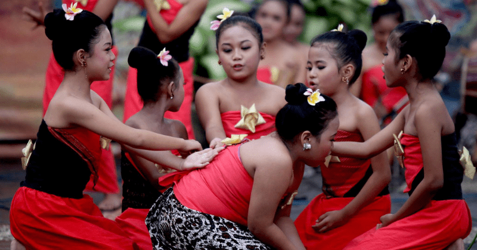
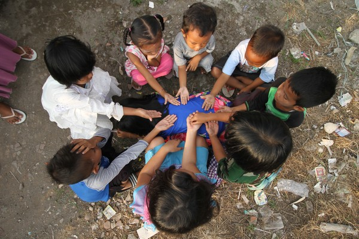

Kebersamaan dalam permainan Cublak Suweng.
Cara Bermain
- Siapkan Pemain: 4-8 anak.
- Peran: Satu anak menjadi penebak (berbaring telungkup di tengah).
- Posisi: Pemain lain duduk melingkar sambil meletakkan tangan di punggung penebak.
-
Proses:
- Pimpin lagu "Cublak Suweng" sambil memegang benda kecil (batu/biji).
- Benda dipindah diam-diam dari satu tangan ke tangan lain sambil menyanyikan lagu.
- Setelah lagu berhenti, benda disembunyikan di salah satu tangan.
- Penebak: Harus menebak siapa yang menyembunyikan benda tersebut.
-
Aturan:
- Jika tebakan benar, maka pemain yang menyembunyikan benda menjadi penebak baru.
- Jika salah, maka penebak akan tetap bertugas.
Pengertian
Cublak Suweng adalah permainan tradisional yang berasal dari Jawa Tengah untuk anak-anak, dimainkan oleh kelompok kecil. Permainan ini mengajarkan keterampilan motorik halus, kerjasama tim, dan kemampuan untuk bersikap jujur dan sportif. Ini merupakan warisan budaya lisan yang kuat.
Asal-usul dan Filosofi
Lagu dan permainan Cublak Suweng diperkirakan berasal dari masa penyebaran agama Islam di Jawa, dengan lirik yang kaya makna filosofis:
Makna Nama & Lirik
- Cublak-cublak suweng: Tempat suweng (perhiasan telinga). Secara filosofis melambangkan tempat harta sejati.
- Suwenge teng gelenter: Suweng (harta) berserakan, artinya harta sudah tersedia di mana-mana.
- Mambu ketundhung gudel: Bau kerbau (melambangkan nafsu duniawi) yang diusir.
- Pak Empo Lera Lere: Pak Empong (orang tua) yang linglung, karena terlalu fokus pada nafsu duniawi.
- Sapa ngguyu ndelekaké: Siapa tertawa (merasa paling benar) dialah yang menyembunyikan.
- Sir-sir pong délélé kopong: Hati nurani (sir-sir) yang kosong.

Nilai kebersamaan yang terjalin erat dalam permainan tradisional.